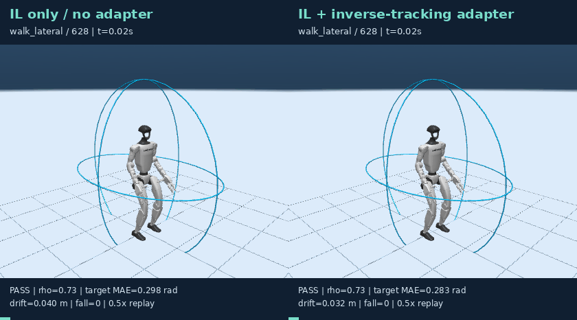
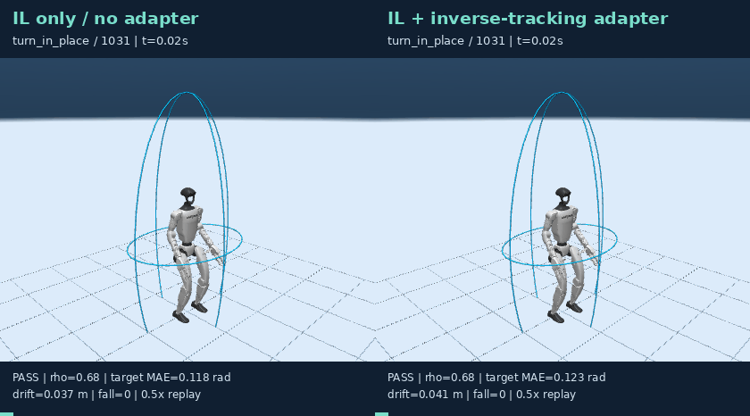
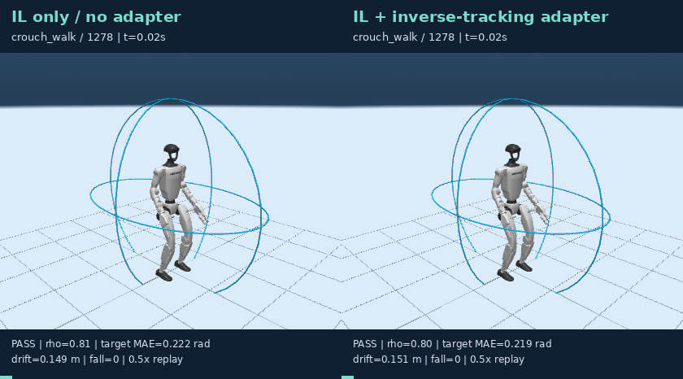
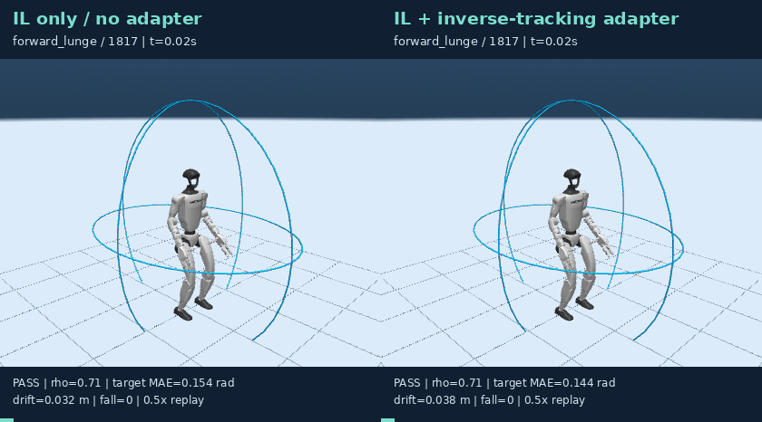
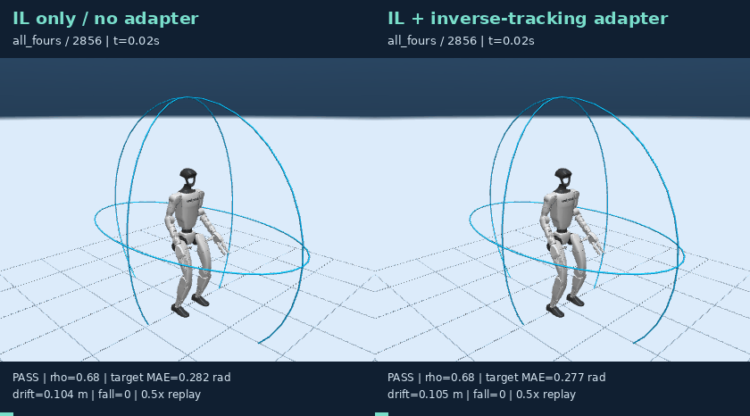
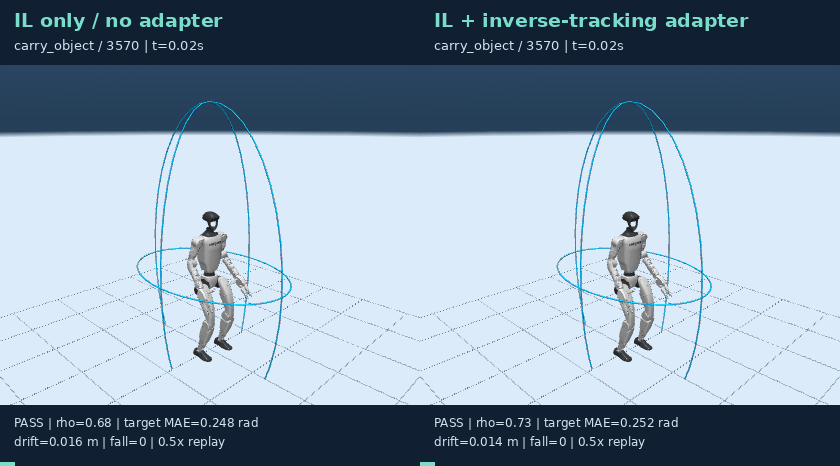

本实验在冻结 SONIC ONNX 的条件下，使用训练集物理回放测量“IL 请求姿态 − 实际保持姿态”，通过短时与 3 秒长时候选筛选后，训练一个只读取 M_e 与 IL 输出的有界残差适配器。SEED 目标只用于物理候选奖励与安全筛选，不作为在线残差标签。
| 时域 | IL only 目标 MAE | 适配器目标 MAE | IL 安全门控 | 适配器安全门控 | IL 姿态成功 | 适配器姿态成功 |
|---|---|---|---|---|---|---|
| 短时全 727 窗口 | 0.2184 ± 0.0003 | 0.2169 ± 0.0018 | 96.6988 ± 0.1376% | 96.5612 ± 0.2382% | 84.2733 ± 0.2101% | 84.5942 ± 0.1376% |
| 长时固定 38 窗口 | 0.1904 ± 0.0013 | 0.1894 ± 0.0016 | 95.6140 ± 1.5193% | 95.6140 ± 1.5193% | 86.8421 ± 2.6316% | 88.5965 ± 4.0198% |
该实验显示短时 MAE 平均下降，但短时安全率存在约 0.14 个百分点的 test 波动；长时安全率保持。它是 simulator-aware 改善证据，不是已经完成的实机验证或 SOTA 声明。
当前 split=2 已在 v3–v5 中被查看，因此本页属于 development-test；论文结论仍需新 actor / 新物理场景的未查看 confirmation set。
| 来源 | IL 与逆跟踪适配器同步对照 |
|---|---|
| walk_lateral / 628 |  |
| turn_in_place / 1031 |  |
| crouch_walk / 1278 |  |
| forward_lunge / 1817 |  |
| all_fours / 2856 |  |
| carry_object / 3570 |  |
seed=20260928
OMP_NUM_THREADS=2 OPENBLAS_NUM_THREADS=2 ./scripts/python.sh -m manifold_motion.stage1.simulator_adapter --seed "$seed" --base reports/manifold_motion/stage1_ab_response_v3/replicate_${seed}/seed_${seed}/imitation.pt --out reports/manifold_motion/stage1_sim_adapter_v9_tracking/seed_${seed}
OMP_NUM_THREADS=2 OPENBLAS_NUM_THREADS=2 ./scripts/python.sh -m manifold_motion.stage1.simulator_adapter --evaluate --seed "$seed" --base reports/manifold_motion/stage1_ab_response_v3/replicate_${seed}/seed_${seed}/imitation.pt --out reports/manifold_motion/stage1_sim_adapter_v9_tracking/seed_${seed}